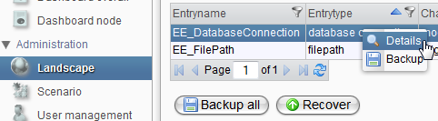
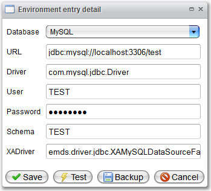

Migration of Landscape Entries

Topic content
The landscape view is used for the maintenance of the technical infrastructure. On scenario basis, the environment data such as connection configuration like database connection can be seen, maintained, saved and recovered.
In Orchestra you have the possibility to migrate the current configuration of your landscape settings of a scenario to another environment. Just open the landscape view and use the button “Backup all” to export the configuration as zip archive to your local file system. The zip archive contains for each environment entry a separate xml-file.
If you want to import the setting to another environment like the production system, click the “Recover” button. Similar to a deployment you can choose the zip archive and submit it to the server.
After selecting a scenario, the view below appears. The detail view is opened by double clicking a table entry or via the context menu.


It is recommended to check the connection changes before saving. Use the "Test"-button for this purpose.
Furthermore, it is possible to save single entries via XML-export by using the detail view or the context menu. A download of all the scenario landscape is possibly by clicking the "Backup all"-button.
The recovery of saved data can be uploaded via the "Recover"-button. It is possible to upload files with the backup of whole landscapes and of single entries.
|
The current data will be overwritten with the recovery data |